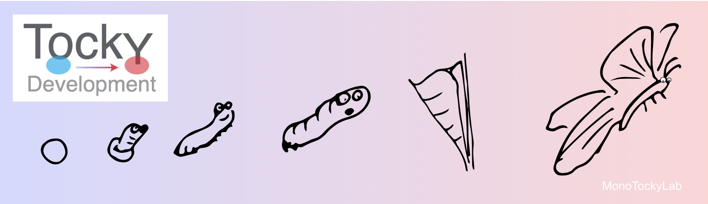
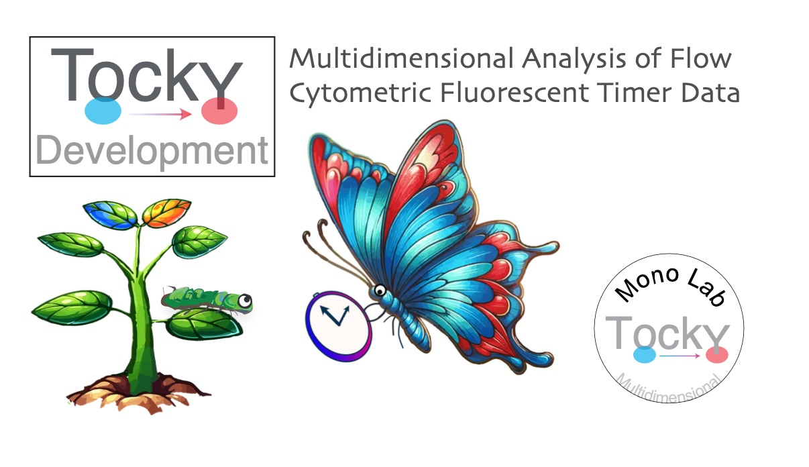

Author: Dr. Masahiro Ono
Date: 27 November 2024
Introduction
Fluorescent Timer proteins change their emission spectra over time and serve as powerful tools for monitoring dynamic cellular processes. Analyzing flow cytometric data from Fluorescent Timer protein reporters, especially when combined with multidimensional marker profiles, has been challenging due to the lack of suitable analytical methods.
The TockyDevelopment package provides a suite of methods for the integrative analysis of multidimensional flow cytometry data involving Fluorescent Timer proteins. It enables the identification of time-dependent trajectories based on the progression of Timer maturation. The package is particularly suitable for analyzing developing cells using Fluorescent Timer reporter systems. Prototype analyses are based on thymic T cell development using Nr4a3-Tocky mice.
Key Features
The TockyDevelopment package offers functions for analyzing the temporal dynamics of developing cells during development, utilizing Fluorescent Timer protein reporters, cross-analyzing Timer data and multidimensional marker expression profiles. The package enables identification of time-dependent trajectories using Fluorescent Timer data.
-
Integrative Analysis with TockyRDA
- Implements TockyCCA, a variant of Canonical Correspondence Analysis (CCA) optimized for multidimensional flow cytometric data involving Fluorescent Timer proteins.
- Allows integrative analysis of marker expression profiles and Timer progression without centering the environmental variables (Timer Angle and Intensity), preserving their directional and magnitude properties.
-
Network Analysis of Cell Clusters
- Analyzes TockyCCA outputs using network analysis to elucidate relationships between cell clusters.
- Identifies potential developmental trajectories by examining the connectivity and transitions between clusters.
-
Pathfinding Analysis with Dijkstra-Tocky Algorithm
- Employs a novel pathfinding algorithm, Dijkstra-Tocky, to identify time-dependent trajectories based on network analysis outputs.
- Pinpoints developmental paths by finding the shortest paths in the network, representing the most probable sequences of cellular transitions.
Availability
- TockyDevelopment is available at GitHub: TockyDevelopment
Getting Started with TockyDevelopment
To begin using TockyDevelopment, install the package from GitHub using the following command:
# Install TockyDevelopment from GitHub
devtools::install_github("MonoTockyLab/TockyDevelopment")4. Package Documentation
The TockyDevelopment package documentation is available online:
This site includes all the function reference manuals and vignettes (tutorials).
In addition to the HTML manual pages, a PDF manual for the TockyDevelopment package is available. You can find it in the installed package directory under doc/, or you can access it directly from GitHub.
5. Copyright and Citation Guidelines
Copyright
All code and original graphical content within the TockyDevelopment package, including anime-like characters and logos, are copyrighted by Masahiro Ono. A patent application related to the methodologies employed within this package has been filed and is pending. The intellectual property is held under Imperial College London and Masahiro Ono.
Usage
The TockyDevelopment code is available on GitHub without a standard licensing option. It is intended for public viewing and verification related to the associated academic publication. No rights are granted for the use, modification, or distribution of the code for any purposes without explicit permission. For permissions or inquiries, please contact: m.ono@imperial.ac.uk
Citing TockyDevelopment
If you use the TockyDevelopment package or any of its components in a scientific publication or in any other public work, please cite it as follows:
Masahiro Ono and Tessa Crompton (2024). A Multidimensional Toolkit for Elucidating Temporal Trajectories in Cell Development In Vivo. Development.
BibTeX Entry:
License
Proprietary License: All rights reserved. The TockyDevelopment package is available under a proprietary license. Use, modification, or distribution of the software for any purpose requires explicit permission. For licensing options or to request permissions, please contact Masahiro Ono.
Warranty
This software is distributed WITHOUT ANY WARRANTY; without even the implied warranty of MERCHANTABILITY or FITNESS FOR A PARTICULAR PURPOSE.
Why Citation Is Important
Citing software you’ve used is crucial for acknowledging contributions and ensuring reproducibility, which are critical for scientific progress.
- Giving credit to the developers and researchers who have contributed to the tools you utilize respects and acknowledges their intellectual contributions.
- Proper citations allow other researchers to access the same tools and versions, thus replicating and verifying your scientific results.
Citations are integral to the scientific ecosystem; they help trace the evolution of ideas and enable others to build upon existing research.
We kindly remind our users that citing software is as important as citing academic articles in maintaining the integrity of the scientific record.
Further Resources
For additional guidance on citation practices and maintaining research integrity, we recommend visiting the Committee on Publication Ethics (COPE), which offers valuable resources and support for adhering to ethical practices in scholarly publishing.
6. The Ono Lab (MonoTockyLab)

The Masahiro Ono Lab (MonoTockyLab) offers innovative approaches to analyzing omics and flow cytometric data. The lab is particularly well-known for their development of Timer-of-cell-kinetics-and-Activity (Tocky) and integrated analysis of immunological data using both experiments and computational analysis.
Principal Investigator: Dr. Masahiro Ono, Reader in Immunology at Imperial College London.
Dr. Ono is the creator and developer of Tocky. He innovated the transgenic and computational technologies that constitute Tocky.
In 2008, Dr. Ono initiated his pioneering transition from molecular immunology to becoming an Integrated Experimental and Computational Immunologist, demonstrating his visionary leadership and pioneering spirit in the development and application of multidimensional analysis and computational methods to address experimental and immunological problems. Tocky represents one of the fusion technologies that Dr. Ono has both created and developed.
Tocky employs the Fluorescent Timer protein to analyze the temporal dynamics of cell activities and development in vivo. His lab integrates molecular biology, immunology, and computational analysis to develop novel research tools, thereby enhancing the understanding of immune cell biology.
7. Contact and More
Email: 
Personal Homepage:
GitHub: 
Twitter: 
Professional Homepage: Imperial College London - Masahiro Ono
